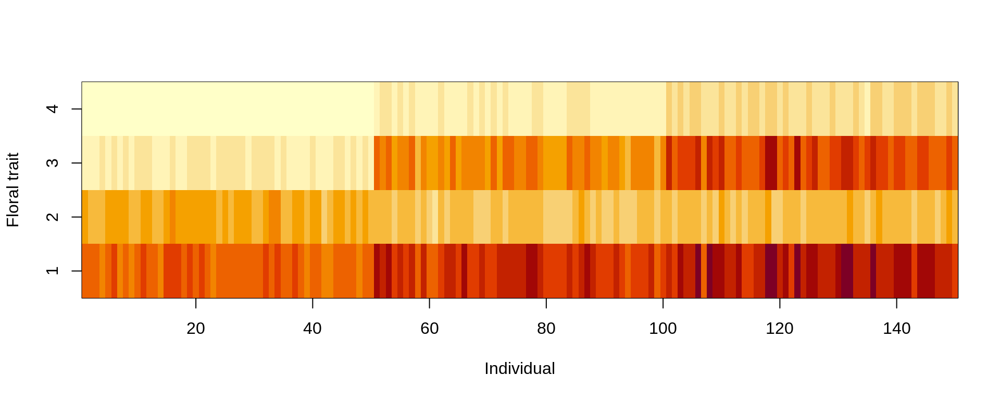
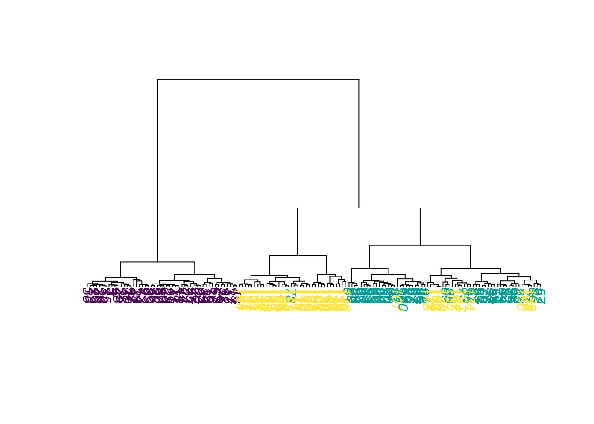

2 Introduction to Machine Learning
In this lesson, we introduce the three basic ML tasks: supervised regression and classification, and unsupervised learning.
In ML, we distinguish 3 basic learning paradigms: - Supervised learning - Unsupervised learning - Reinforcement learning We will speak about reinforcement learning at the end of the course. Now, we want to look at examples of supervised and unsupervised learning. Before you start with the code, here a video to remind you of what we talked about in the class:
2.1 Supervised learning: regression and classification
Two two main subbranches of supervised learning are regression and classification. Here a video that explains again the difference
2.1.1 Supervised regression using Random Forest
The random forest (RF) algorithm is possibly the most widely used ML algorithm and can be used for regression and classification. We will talk more about the algorithm on Day 2. Here an example of a regression:
Visualization of the data:
plot(iris, col = iris$Species)
Fitting the model
library(randomForest)
m1 <- randomForest(Sepal.Length ~ ., data = iris)
# str(m1)
# m1$type
# predict(m1)
print(m1)##
## Call:
## randomForest(formula = Sepal.Length ~ ., data = iris)
## Type of random forest: regression
## Number of trees: 500
## No. of variables tried at each split: 1
##
## Mean of squared residuals: 0.1397208
## % Var explained: 79.49Visualization of the results
par(mfrow = c(1,2))
plot(predict(m1), iris$Sepal.Length, xlab = "predicted", ylab = "observed")
abline(0,1)
varImpPlot(m1)
This is a nice visualization of the RF structure, but requires to load a package from GitHub
# devtools::install_github('araastat/reprtree')
reprtree:::plot.getTree(m1, iris)
2.1.2 Supervised classification using Random Forest
Fitting the model:
set.seed(123)
m1 <- randomForest(Species ~ ., data = iris)
# str(m1)
# m1$type
# predict(m1)
print(m1)##
## Call:
## randomForest(formula = Species ~ ., data = iris)
## Type of random forest: classification
## Number of trees: 500
## No. of variables tried at each split: 2
##
## OOB estimate of error rate: 4.67%
## Confusion matrix:
## setosa versicolor virginica class.error
## setosa 50 0 0 0.00
## versicolor 0 47 3 0.06
## virginica 0 4 46 0.08Visualizing the fitted model:
par(mfrow = c(1,2))
reprtree:::plot.getTree(m1, iris)
Visualizing results ecologically:
oldpar <- par(mfrow = c(1,2))
plot(iris$Petal.Width, iris$Petal.Length, col = iris$Species, main = "observed")
plot(iris$Petal.Width, iris$Petal.Length, col = predict(m1), main = "predicted")
Confusion matrix:
table(predict(m1),iris$Species)##
## setosa versicolor virginica
## setosa 50 0 0
## versicolor 0 47 4
## virginica 0 3 462.2 Unsupervised learning
In unsupervised learning, we basically want to identify patterns in data without having any guidance (supervision) about what the correct patterns / classes are.
It is all much easier with a practical example. Consider our iris dataset.
- Here, we have observations of different species
- Together with their flower traits Imagine we didn’t know what species are. This is basically the situation in which people in the antique would have been. There is no book to look up species. You just noted that there seem to be some kind of plants that have different flowers than another, so you decide to call them by a different name. This kind of process is what unsupervised learning does.
2.2.1 k-means clustering
An example for an unsupervised learning algorithm is k-means clustering, one of the simplest and popular unsupervised machine learning algorithms.
A cluster refers to a collection of data points aggregated together because of certain similarities. In the algorithm, you’ll define a target number k, which refers to the number of centroids you need in the dataset. A centroid is the imaginary or real location representing the center of the cluster.
Every data point is allocated to each of the clusters through reducing the in-cluster sum of squares. In other words, the K-means algorithm identifies k number of centroids, and then allocates every data point to the nearest cluster, while keeping the centroids as small as possible. The ‘means’ in the K-means refers to averaging of the data; that is, finding the centroid.
sIris = scale(iris[,1:4])
model<- kmeans(sIris,3) # aplly k-means algorithm with no. of centroids(k)=3
model## K-means clustering with 3 clusters of sizes 47, 53, 50
##
## Cluster means:
## Sepal.Length Sepal.Width Petal.Length Petal.Width
## 1 1.13217737 0.08812645 0.9928284 1.0141287
## 2 -0.05005221 -0.88042696 0.3465767 0.2805873
## 3 -1.01119138 0.85041372 -1.3006301 -1.2507035
##
## Clustering vector:
## [1] 3 3 3 3 3 3 3 3 3 3 3 3 3 3 3 3 3 3 3 3 3 3 3 3 3 3 3 3 3 3 3 3 3 3 3 3 3 3 3 3 3 3 3 3 3 3 3 3 3 3 1 1 1 2 2 2 1 2 2 2 2 2 2 2 2 1 2 2 2 2 1 2 2 2 2 1 1 1 2 2 2 2 2 2
## [85] 2 1 1 2 2 2 2 2 2 2 2 2 2 2 2 2 1 2 1 1 1 1 2 1 1 1 1 1 1 2 2 1 1 1 1 2 1 2 1 2 1 1 2 1 1 1 1 1 1 2 2 1 1 1 2 1 1 1 2 1 1 1 2 1 1 2
##
## Within cluster sum of squares by cluster:
## [1] 47.45019 44.08754 47.35062
## (between_SS / total_SS = 76.7 %)
##
## Available components:
##
## [1] "cluster" "centers" "totss" "withinss" "tot.withinss" "betweenss" "size" "iter" "ifault"Visualizing the results:
par(mfrow = c(1,2))
plot(Petal.Length~Petal.Width, data = sIris, col = model$cluster, main = "Predicted clusters")
plot(Petal.Length~Petal.Width, data = sIris, col = iris$Species, main = "True species")Confusion matrix:
table(model$cluster,iris$Species)##
## setosa versicolor virginica
## 1 0 11 36
## 2 0 39 14
## 3 50 0 0